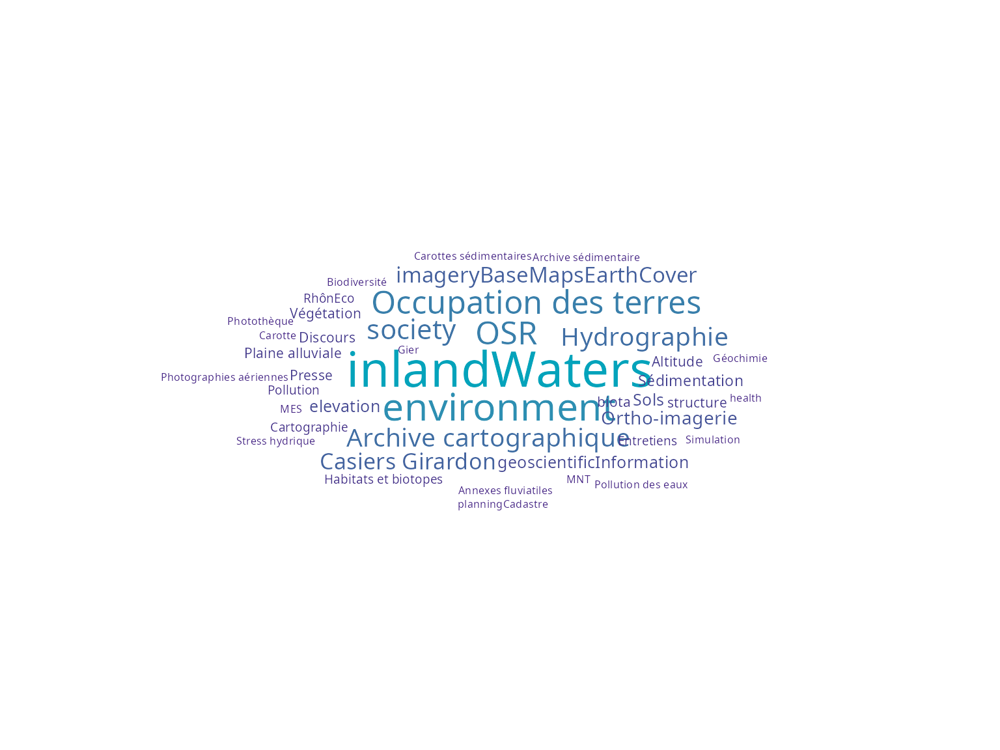
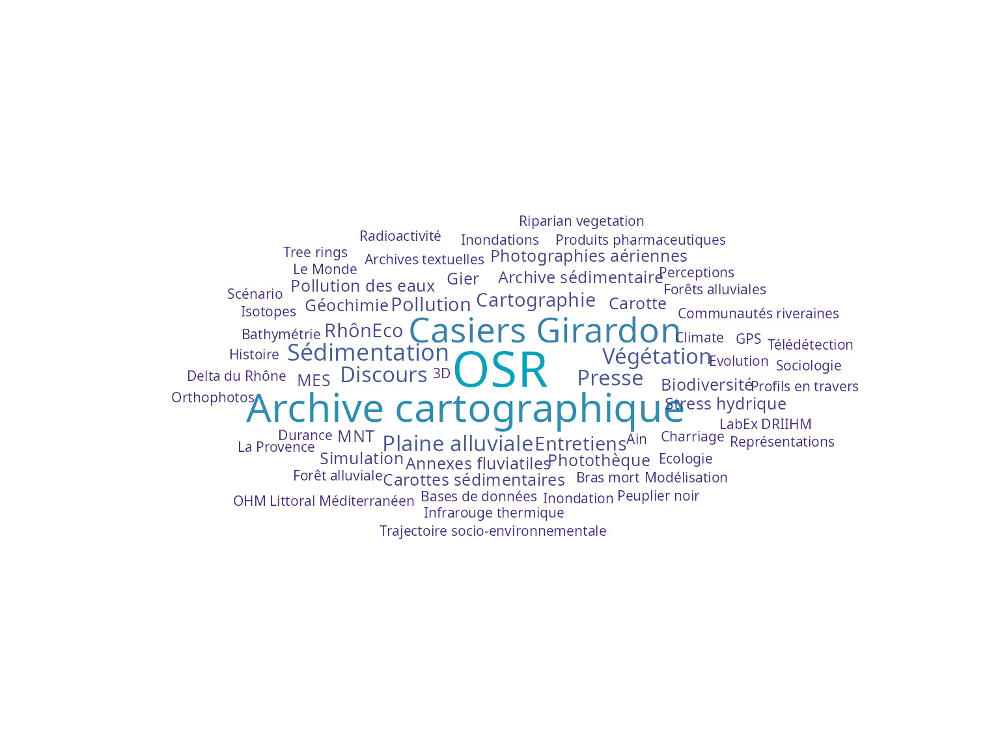
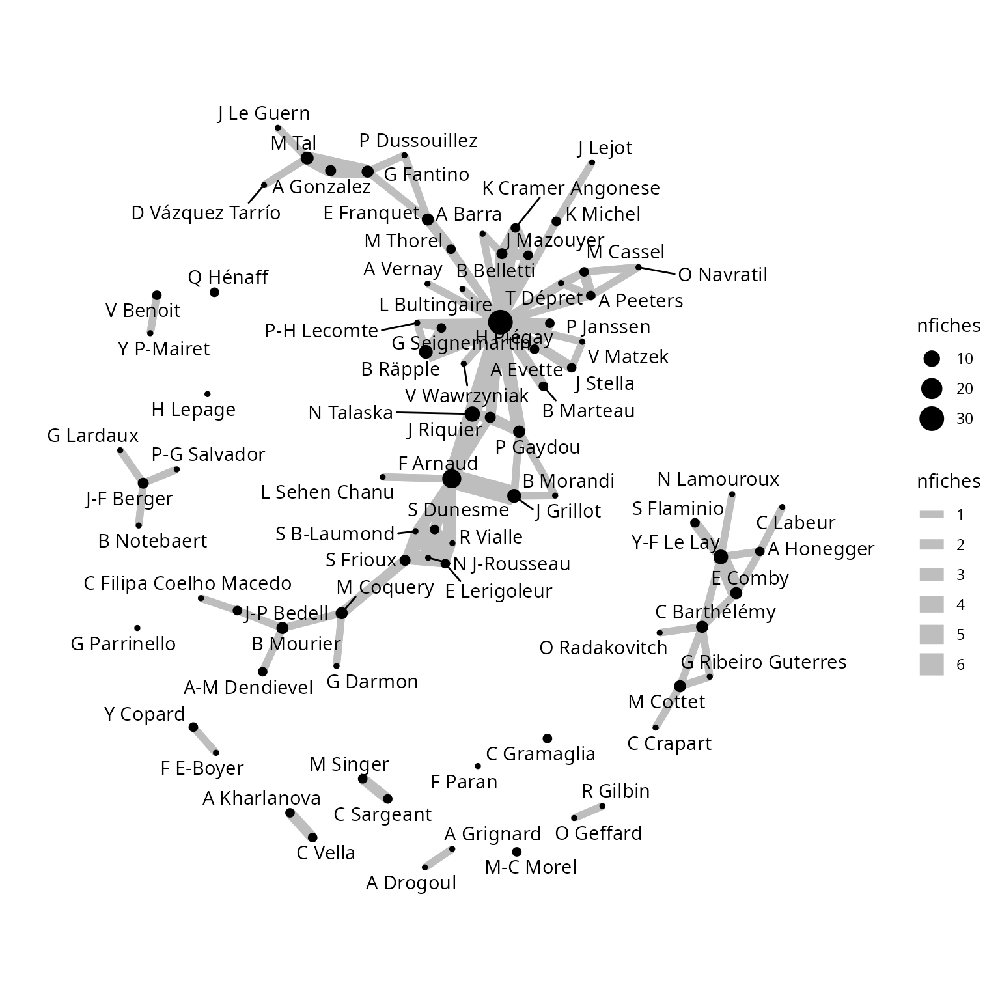
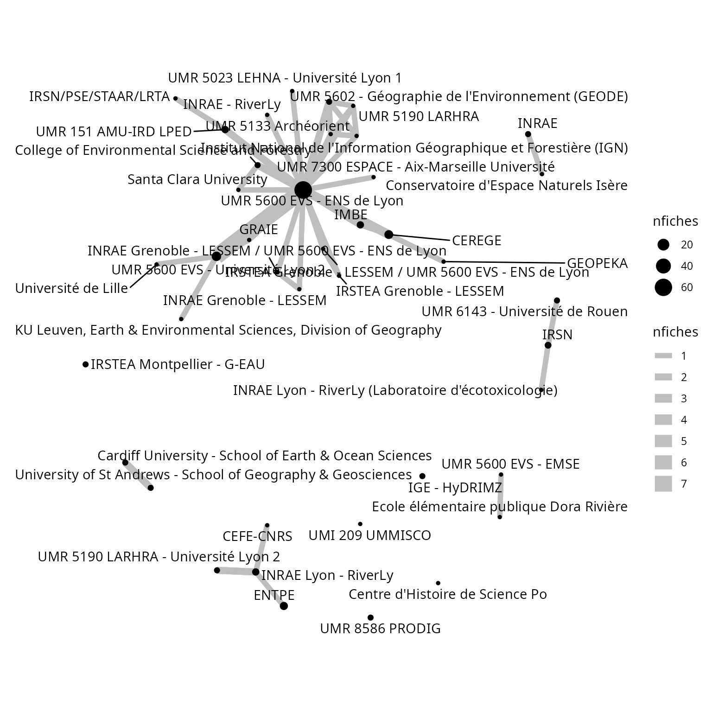
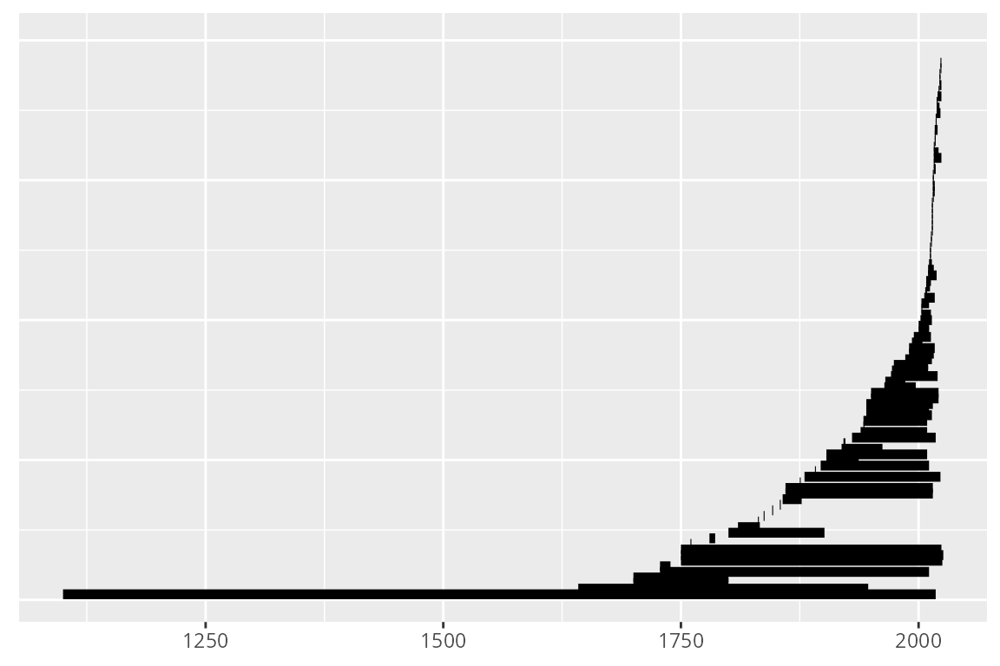
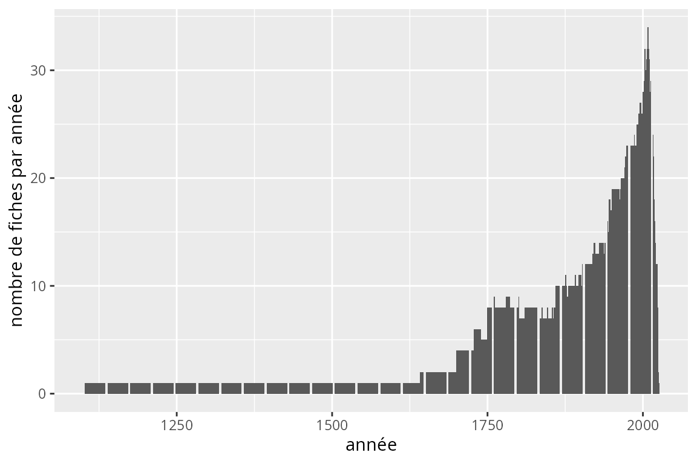
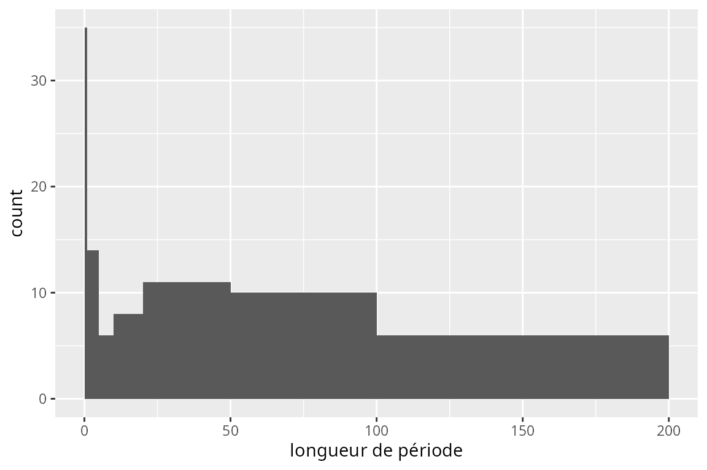

elvisual
elvisual.RmdLes fiches de métadonnées ont été exportées dans un dossier.
metadata_dir="../data-raw/OHM_metadata" # à adapter bien sûr
print(metadata_dir)
#> [1] "../data-raw/OHM_metadata"Récupération des données depuis les fichiers .xml
On récupère les informations qu’on formatte dans un tableau.
metadata=el_get_metadata(metadata_dir)
#> Warning: All formats failed to parse. No formats found.
categories=el_get_categories(metadata_dir)Statistiques de base
metadata_summary=el_metadata_summary(metadata)Nuages de mots
table_keywords=el_table_keywords(metadata)
head(table_keywords)
#> # A tibble: 6 × 3
#> keywords type freq
#> <chr> <chr> <int>
#> 1 OHM VR FREE 100
#> 2 Rhône FREE 90
#> 3 inlandWaters ISO 62
#> 4 environment ISO 38
#> 5 OSR FREE 26
#> 6 Occupation des terres INSPIRE 26
table_keywords=el_table_keywords(metadata) %>%
dplyr::filter(freq>2)
el_wordcloud(table_keywords,
keywords_to_remove=c("OHM VR","Rhône"),
max_size=10)
table_keywords_FREE=el_table_keywords(metadata) %>%
dplyr::filter(type=="FREE")
el_wordcloud(table_keywords_FREE,
keywords_to_remove=c("OHM VR","Rhône"),
max_size=15)
Graphes de relations
graph_data=el_graph_data(metadata,nodetype="personne")
el_graph(graph_data, shorten_name=TRUE)
graph_data=el_graph_data(metadata,nodetype="organisation")
el_graph(graph_data, shorten_name=TRUE)
Vue temporelle
table_time=el_table_time(metadata)
el_timeline(table_time)

el_durationhist(table_time)